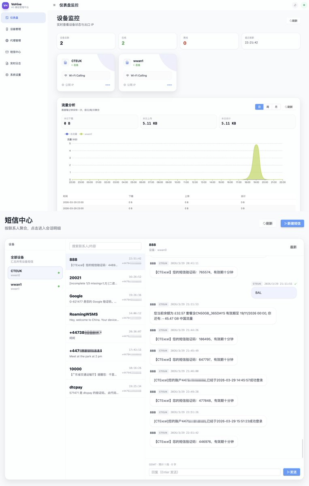
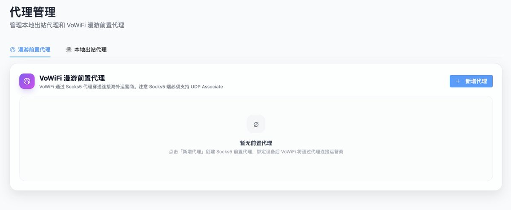
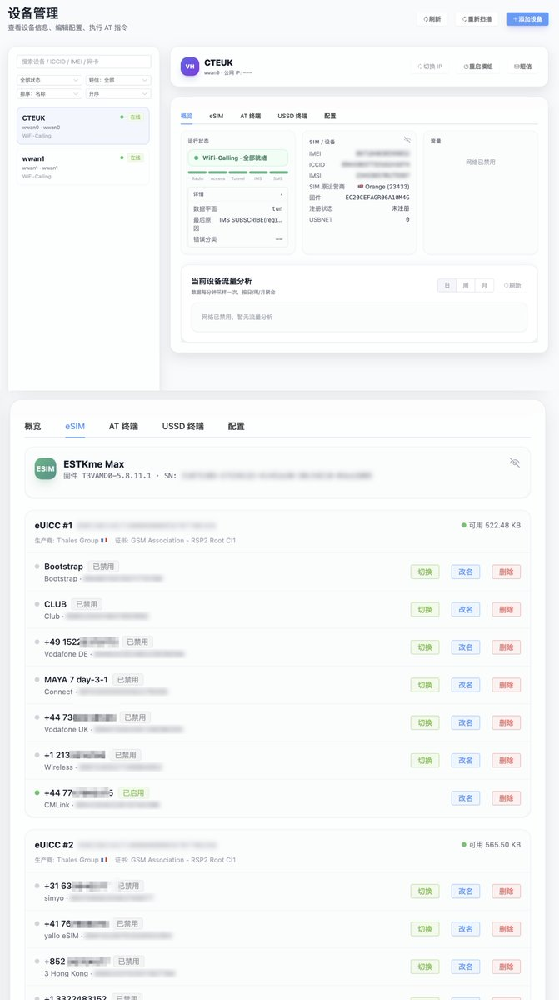
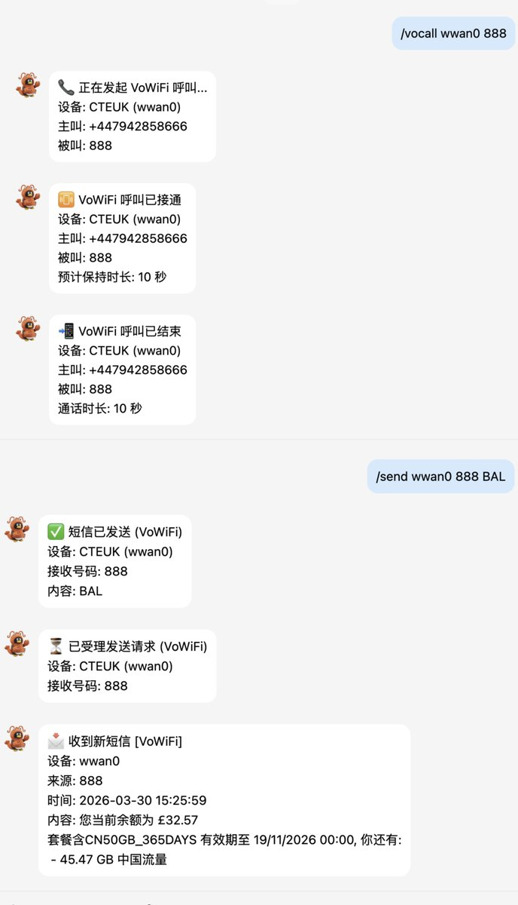

说起WiFi通话，它可以让用户在境外打电话就像在本国打电话一样。因此部分运营商限制本国IP接入以赚取漫游费用，就比如前阵子分享的CTExcel UK激活亦是如此。
所以要向大家介绍VoHive，一个面向移远 4G 模组的管理平台，需要准备移远EC20模块配合使用，由奶友iniwex开发并提供教程（见评论区）。
使用这个项目，可以做到网页/Bot收发短信、多卡统一管理、实体eSIM/eUICC 管理（加卡，切卡，删卡）、基于手机卡流量的代理池、在条件满足时启用 VoWiFi
另外可以使用TelegramBot、飞书Bot、QQBot远程控制。
图中演示的是通过/vocall发起VoWiFi模拟外呼激活CTExcel UK和CMLink UK等需要在本地拨打电话才能激活的号码，以及其他需要定期拨打一通电话做保号的海外号码。
所以要向大家介绍VoHive，一个面向移远 4G 模组的管理平台，需要准备移远EC20模块配合使用，由奶友iniwex开发并提供教程（见评论区）。
使用这个项目，可以做到网页/Bot收发短信、多卡统一管理、实体eSIM/eUICC 管理（加卡，切卡，删卡）、基于手机卡流量的代理池、在条件满足时启用 VoWiFi
另外可以使用TelegramBot、飞书Bot、QQBot远程控制。
图中演示的是通过/vocall发起VoWiFi模拟外呼激活CTExcel UK和CMLink UK等需要在本地拨打电话才能激活的号码，以及其他需要定期拨打一通电话做保号的海外号码。



